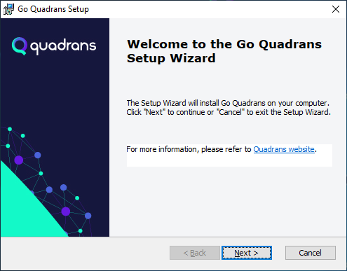
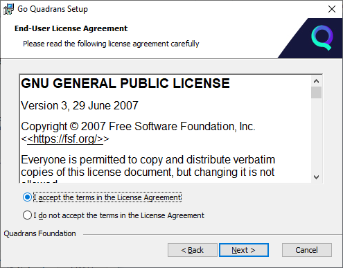
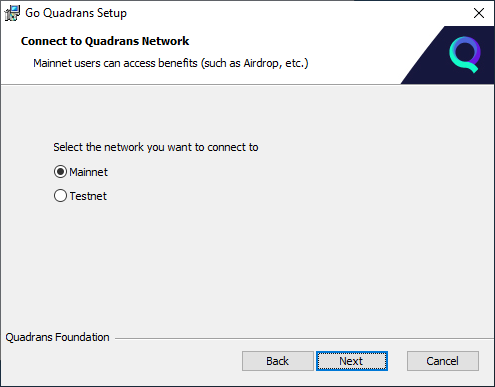
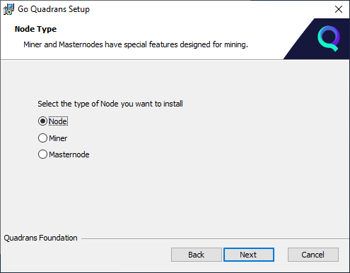
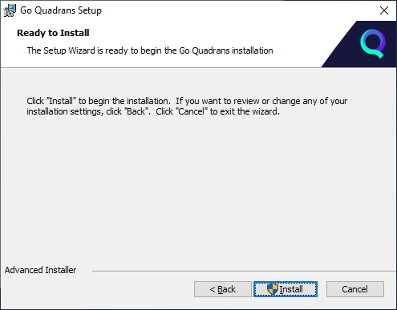
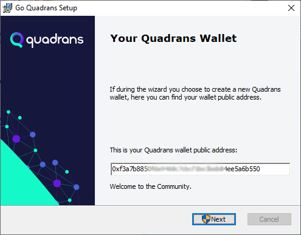
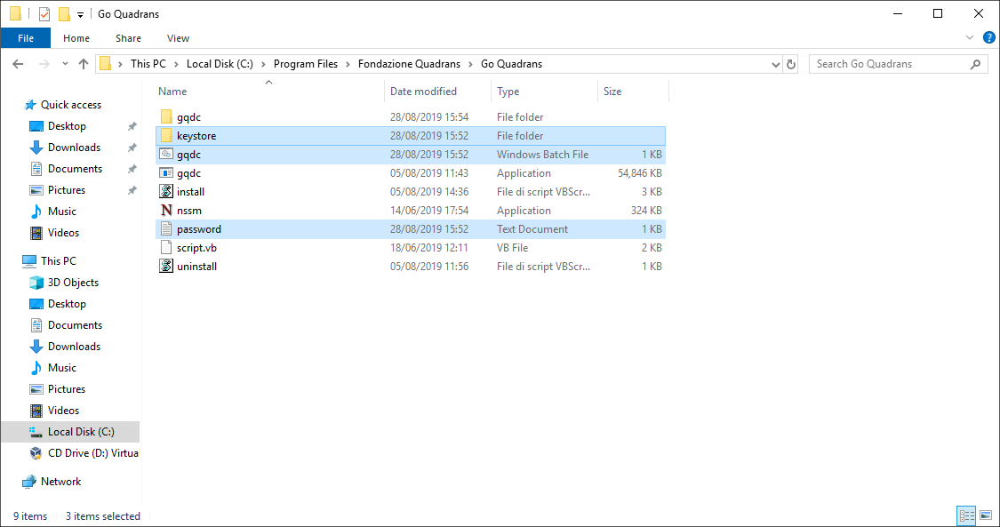
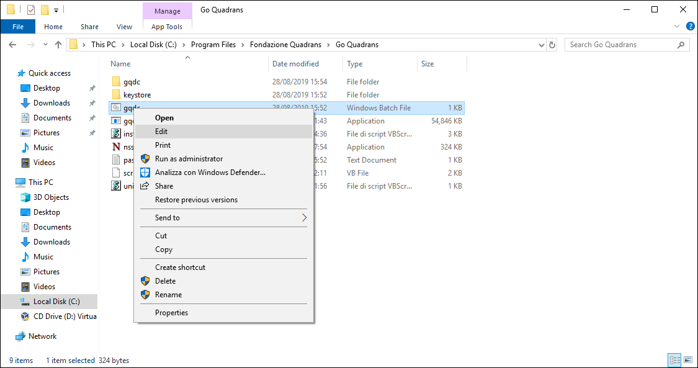

Minimum system requirements:
Computer Desktop, Server or Virtual Machine
Windows 7/8/10
1 Core 64bit CPU
2 GB RAM
50 GB storage
Suggested requirements:
Windows 7/8/10 or Windows Server 2012/2016/2019
2 Core 64bit CPU
4 GB RAM
100 GB storage
Download the latest binary for Windows.
After downloading, run gqdc.exe from your Command Prompt or PowerShell to connect your node to the Quadrans Network.
Make sure to check the different options and commands with gqdc --help
gqdc --help
To change your data directory.
--datadir datadir_path
To show your node in the Quadrans Network Status page.
--ethstats "Your Node Name":QuadransStatsNetwork@status.quadrans.io:3000
To create a new Quadrans wallet create a password inside a text file and execute the following command.
account new --password Your_Password_File.txt
To execute the node as a Miner
--mine --unlock 0xYour_Wallet_Address --password Your_Password_File.txt
To connect to Quadrans Testnet (download the last test Quadrans node binary.
--testnet
Quadrans Node installer is available for Windows 7, Windows 8 and Windows 10 desktop operating system, and Windows Server 2008, Windows Server 2012 and Windows Server 2016.
After you download the correct version for your processor architecture, you can run the **Go Quadrans Setup Wizard** to install the node on your computer.

Select the prefered language, click Next and than click again on Next in the Welcome screen.

Please Accept the License Agreement (GNU GPL v3) to proceed with the installation.

Please select which network to connect to:
Mainnet: is the Quadrans main blockchain.
Testnet: is the testing environment of Quadrans blockchain. Users can trial their new decentralised applications (DApps) under different conditions and conduct analysis before moving to Quadrans main network. Quadrans Coins used in Testnet are easy to obtain and are a replica used exclusively for testing . Please connect to Testnet only for the intended use.
Answer Yes if you want to be listed on the Quadrans Status page and give a name to your node (for example the name of your company) to allow the basic information related to your node to be publicly visible.
During the setup the installer allows to create a wallet for Quadrans Coin linked to your node.
If you want to create a Quadrans wallet, select Yes and choose a password. We suggest to choose a random password with at least 16 digits.
Setting up a wallet is not mandatory, however you can use Quadrans wallet to collect the reward for your contribution as a Miner or Masternode or to identify your transactions on Quadrans blockchain.

You can choose the type of Node you want to install. To enable the mining functions of a Miner and a Masternode you need to pair your Node with a wallet that contains a certain number of Quadrans Tokens (please refer to the free Token reservation page).
Node: it is a computer in the blockchain network that contains a copy of the database, structured in blocks. By joining the Quadrans blockchain, you help ensure and certify that the complete history of transactions stored in the blocks are part of the distributed database. By installing a node you contribute to the expansion of the network and can start entering data into the Quadrans blockchain.
Miner: it is a node of the network that actively contributes to the safety of the infrastructure. To enable a node to the basic mining functions it is necessary to have a minimum of 1000 Quadrans Tokens.
Masternode: it is a node that performs special and highly rewarded computational tasks within the network, such as validating the blocks of the blockchain. A Masternode also distributes the work to the Miners in the network and are fewer in number than Miners. To enable a node to the Masternode mining functions it is necessary to have 100.000 Quadrans Tokens.
Please select the folder where you want to install the Quadrans Node and click Next. Inside this folder you will find the configuration files, the wallet key (if you created one) and all the blockchain data, so please select a disk that meets the minimum system requirements.

In the new window please click Install to complete the Go Quadrans installation in your computer.

If you choosed to create a Quadrans wallet you can copy and paste the public address from the last setup screen. Click Next to end the setup procedure.
Go to Mining and Reward chapter of this Wiki.
Important data regarding your node is stored in the installation folder.

Please open you installation folder, select keystore folder, gqdc.bat and password.txt files and copy to a safe location.
gqdc.bat
password.txt
keystore folder: it contains the private key of your wallet
gqdc.bat: it contains the configuration of your node (name, linked wallet address, etc.)
password.txt: in contains the unlock password of your wallet
To check your wallet address please open your installation folder (default is: c:\\Program files\\Fondazione Quadrans\\Go Quadrans\) and select the gqdc.bat file.
c:\\Program files\\Fondazione Quadrans\\Go Quadrans\

Please right click on gqdc.bat file and select Modify.
You will see your Quadrans Coins wallet address after the unlock parameter, as shown in the image above.
To remove Go Quadrans from your Windows 10 computer go to Start Menu, select the Go Quadrans folder, right click on the Go Quadrans app icon and select Uninstall.
Windows will open the list of your installed app. Select Go Quadrans and click Uninstall.
At the end of the uninstallation please reboot your system.
You can also uninstall Go Quadrans directly from the installer. Double click on the Go Quadrans installer and go on the Modify, Repair or Remove installation window. Please select Remove to uninstall Go Quadrans.